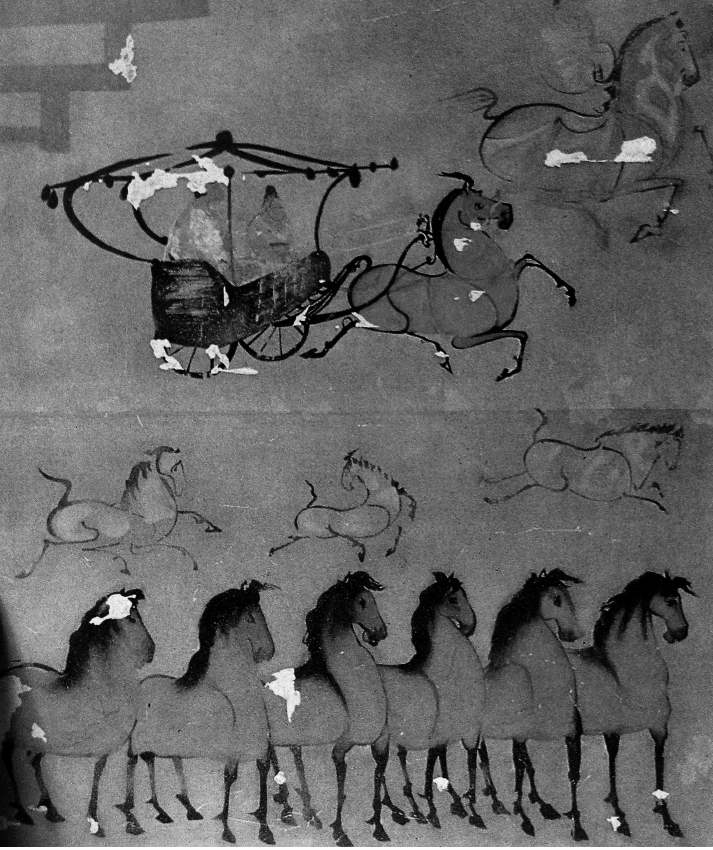
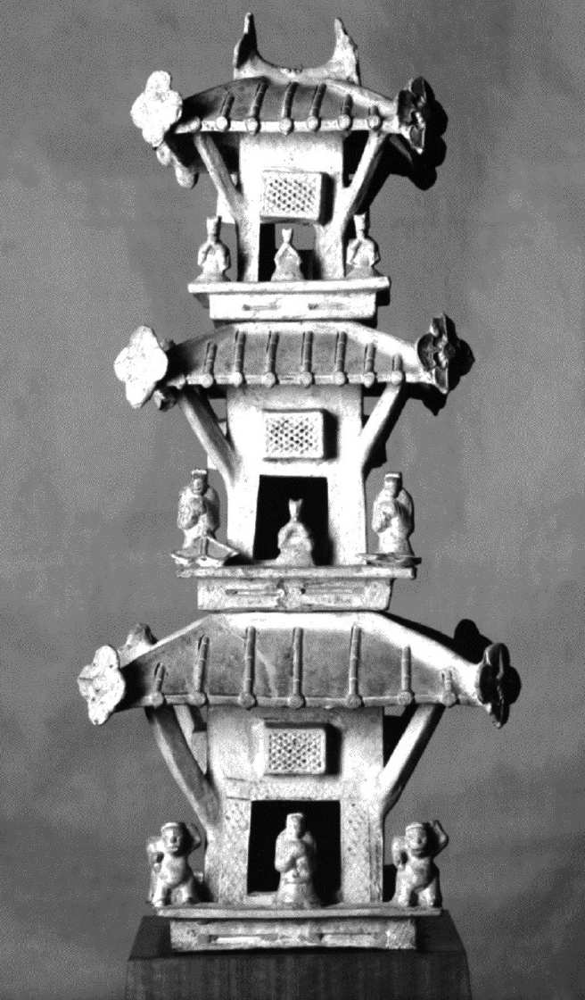
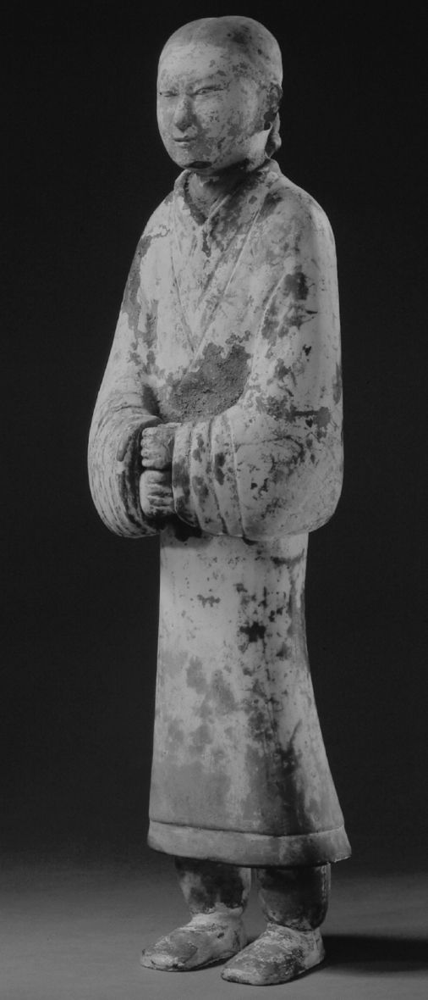

秦始皇一举废除了分封制，不过，继秦而起的汉皇帝更重实际且更为谨慎，他先略微恢复一点分封制，然后再将其削弱到微不足道的地步。在开头时，他将封地授予他的儿子们和近亲，不过这些封地的面积比从前周时期的封建国家的面积要小；而且，它们被散置在由国家官员直接治理的州县之间。后来，公元前127年时，汉皇帝又下了一道诏令，规定嫡长子只可继承封地的一半，余下的封地分给其他子弟。于是，封地不断缩小，其重要性也不断下降，仅仅成为大地产。秦始皇建立的帝国结构又渐渐恢复，只是没有原先的恐惧和压迫。因之，汉帝国繁荣了4个世纪，约相当于罗马帝国的统治时间。
汉帝国的领土也和罗马帝国一样辽阔。在最初的60年间，汉统治者主要是集中全力恢复国家的力量和巩固王朝的统治。但是，到了“好战的皇帝”汉武帝（公元前141——前87年在位）时期，帝国的疆界大大地向四面八方扩展。南面的部落地区被并吞，不过在帝国的这一部分地区开始由操汉语的人居支配地位之前，经过了长达好几个世纪的中国人移居该地区和当地诸民族被同化的过程。最大的扩张发生于西面，在那里，中国探险队穿过中亚，与印度西北部的贵霜帝国建立了联系，从而大大增加了取道丝绸之路的贸易量（见第四章第二节）。

图61 汉代坟墓中出土的壁画牧马图（摹本）局部。
游牧匈奴在骑兵方面占有很大的优势，因为他们拥有取之不尽的马匹。事实上，中国人为了他们骑兵部队所需的马匹，也只好与游牧部落进行贸易交往。但是，中国人拥有一种起决定性作用的新式武器，那就是他们在战国时代后期发明的弩。弩上装有钩弓弦的机栝，一扳扳机，就射出矢来。比起普通的弓，弩的射程更远，穿透力也更强。由于这种武器和大帝国可调度的种种资源，汉朝时期的中国疆域已开始初步呈现出现在所具的规模。
汉帝国不仅在领土范围上，而且在人口数量上，也可与罗马帝国相比较。公元1年的人口调查（据说是比较准确的）表明，汉帝国有约1220万户人家，总人口是约5960万人。而奥古斯都（公元前27——公元14年）时期罗马帝国的人口据估计是，在欧洲有3000万人至5000万人，在亚洲要稍微少一些，在非洲有不到2000万人。

图62 东汉时期的一个绿釉陶制塔楼模型（规格为87.6×35.6×38.1厘米）。注意它与后来中国佛塔的相似处。
居汉帝国之首的是皇帝，他不仅被授予全部的世俗权力，而且还要对其臣民的物质福利和富足负责。对皇帝本人尊严的强调体现在他日常活动的各个方面——体现在他主持的朝廷或神殿的长时间的仪式中，体现在为每一种场合所规定穿的龙袍上，体现在有大群的官吏、朝臣、太监和嫔妃侍候在他身边，有漂亮的马车供他去旅行，还有宏大的陵墓供人们日后用庄重的仪式去安放他的遗体。
居皇帝之下的是两名丞相，相当于现代的总理和首相。他们经常与皇帝接触，负责政府的实际运作。在他们之下的是九卿，分掌如下职责：宗教礼仪，宫殿警卫，照管御用车马，惩处罪犯，接受外国领导人的敬意和贡物，记录皇族、宗室的名籍，征收国家税收，管理帝国财政。
除中央政府之外，还有往下依次管理州、郡、县、乡的地方官僚机构。基层官吏承担如下任务：征收捐税（包括谷物、纺织品或现金），捉拿罪犯，维护公路、运河和粮仓，提供驿马和一连串的驿站来维持帝国的邮政。
据说，公元前1世纪时，官僚机构中共有官吏13万名，平均每400或500个居民仅摊到1名。与总人口相比，官吏的数目是很小的；在中国整个历史上，这也很典型，可以解释为帝国政府所起的作用颇有限。中国有句谚语说，“治大国如烹小鲜：过犹不及”。因而，在现代世界中被认为理所当然的那些为社会服务的职责，中国历代政府均不承担，上述九卿的职责可以清楚地表明这一点。更确切地说，中国政府的主要作用在于征收捐税、保卫国家免遭外来进攻和巩固王朝不受内部颠覆。
官僚是个特权集团，但不是世袭的。汉时期，发明了一项独特的制度，就是通过全国竞争性考试来选拔文职人员。公元前124年，建立了一种帝国大学，招收的学生是专为政府部门培养的。学校不断扩大，到公元前1世纪下半叶，学生总数达3000人；在汉代结束前，学生总数已达3万人。当考试这种形式后来获得充分发展时，就分成三种级别（乡试、会试、殿试）举行；通过一种级别的考试就可以获得一种相应的学位。这三种学位大致相当于西方大学中的学士、硕士和博士。原则上，所有的人都可参加考试，可实际上，由于投考者需经过长期的学习，只有那些富家子弟才具备资格。不过另一方面，村庄、氏族或行会的捐赠也常常使穷人的孩子得到求学的机会。
考试是以儒家经典为基础，所以帝国实际上是由儒家学者根据儒家原则来进行治理。每个官吏都被分派到自己家乡以外的地方去做官，以保证他不能利用自己的职位在当地发展家族势力。结果，形成一个行政制度，其效率和反应灵敏的程度远远超过现代以前的任何别的行政制度。实际上，文职人员的选拔视功绩而定，是中国帝国制度从秦始皇起一直持续到20世纪的一个主要因素。不过，科举考试制度还有另外一面。由于它是以只承认一家学说为基础，这就产生一种顽固的正统观念，并引起一部分知识分子的傲慢，而这些东西正是若干世纪后当西方商人和炮船出现时，中国陷入困境的一个原因。
虽然中国跨入近代以后由于科学和工业的落后而受到极大损害，但在汉时期，情况则完全不同。那时，中国在技术上与欧亚其余地区并肩而行，在许多领域还处于领先地位，并一直维持到最近几个世纪。在汉时期的数百年间，中国最重要的发明有水力磨、可大大提高马的使用效率的马肩轭、铸铁技术、造纸术和陶器上釉术。破布制成的优质纸从公元105年起就有了，并很快取代了书写用的笨重的木片和竹条。但是由于纸不像木片那样经久耐用，而且它早在印刷术发明之前很久就有了，所以不能不有悖常理地认为，某些书的散失应归咎于纸。不过，最终使瓷器得以产生的陶器上釉术的发明是一个纯粹的福音。那些上釉陶器不仅达到艺术创作的水平，而且从讲究卫生出发也是一大进步；因为光滑的瓷器比从前使用的粗糙的陶器或木制器皿更易保持清洁。
汉时期在文学方面的卓越贡献主要表现在撰写历史上。历史著作是一个指望用过去的经验来指导现在的民族所欢迎的。中国的“五经”（《诗》《书》《礼》《易》《春秋》）里已包含有大量的各种史料。但是公元前1世纪时，出现了一部其内容比那时以前的任何一部著作都要全面、复杂得多的历史著作。
这部历史著作就是《史记》。《史记》是父子两代人合写的，不过通常认为原作者是儿子司马迁，因为他写了这部书的主要部分。司马迁作为朝廷的史官，有博览国家所藏图书和档案的权利。此外，他还广泛地周游了全国各地，周游期间，利用了各地藏书楼的资料。所以他撰写的这部史书与其说是一部有独创性的著作，不如说是一部所有他能接触到的史料的汇编。只是在撰述他所处时代的各种事件和人物时，他才表达个人的看法，写出有独到见解的历史。正如他谦虚地解释的：我的叙述仅仅是使过去传下来的材料系统化，因而，这不是创作，只是如实地表述。
这种方法有其明显的不足，尤其是使作品缺乏在早期希腊历史学家希罗多德的著作中常可见到的戏剧性和前后统一的风格。不过另一方面，它确也为后世收集和保存了取自当时的图书和档案的数量惊人的史料。《史记》总共约52万字，实际上是一部综合性的通史。它共有130篇，包括编年史、诸王朝年表、汉朝名人传记和有关礼仪、音乐、占星术、天文学、经济、外国风土人情等的各种论述。后来的中国史学家对司马迁都很推崇，照搬他的方法，所以，中国绵延几千年的编史工作留下了其他任何国家都望尘莫及的大量史料。

图63 西汉时期（公元前2世纪）制作的陪葬用的直立侍从俑。
所有的中国史学家也都相信“天命”这一观念。他们认为皇帝只要具有公正、仁慈和真诚这些美德，就可以上天代表的身份进行统治。当皇帝不再表现出这些美德，并施暴政于国家时，他就会被自动地剥夺天命；那时，反对他的叛乱就不是一种罪行，而是上天借助反叛者给予他的惩罚。因此，中国史学家虽然也意识到促成王朝衰落的各种社会和经济因素，但总认为这些因素与他们所相信的一个更为根本性的因素——统治者是否具有合格的道德品质——相比，处于次要地位。于是，中国的编史工作倾向于汇编各种原始资料而不是让史学家本人对各种问题提出自己的分析，而史书的组织结构则是建立在根据天命的作用所解释的诸朝代的盛衰兴亡这一基础上。